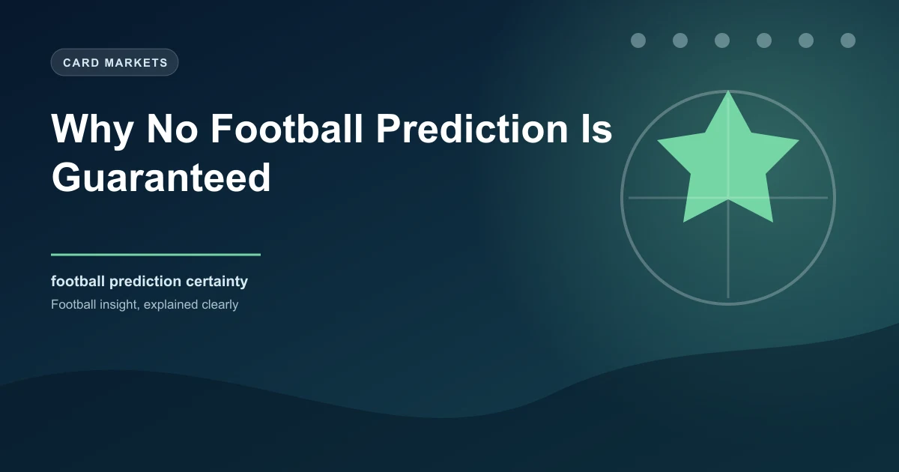

Search the internet for football predictions and you will find no shortage of people claiming to have a guaranteed winner. Sure bets, bankers, locks, sure things. The language of certainty is everywhere in football betting, and it is one of the most dangerous ideas a bettor can internalise. The truth is simple: no football prediction is ever guaranteed. Not by a tipster, not by a statistical model, not by the most experienced analyst in the world.
Football is a sport defined by its unpredictability. That unpredictability is not a bug. It is the fundamental feature that makes the sport compelling and that makes betting both possible and perilous. Understanding why certainty is impossible is the first step toward building a betting approach grounded in reality rather than hope.
There are numerous reasons why no outcome in football can ever be guaranteed. These range from the obvious to the subtle, but all of them contribute to a sport where surprises are not just possible but frequent.
Football is one of the lowest-scoring major sports. A single goal often decides the outcome, and a single goal can come from a deflection off a defender's heel, a goalkeeper's fingertip save that loops upward and drops under the crossbar, or a perfectly struck free kick that hits the inside of the post. These moments are influenced by fractions of inches and milliseconds of timing. No amount of analysis can predict exactly when and how these moments will occur.
In a sport where the average number of goals per match hovers around 2.5 to 2.8 across major European leagues, each individual goal carries enormous weight. This low-scoring nature means that variance plays a much larger role than in high-scoring sports like basketball or American football. A dominant team can create chance after chance and still lose because their opponents scored from their only shot on target.
Football is played by human beings, and human beings make mistakes. A world-class defender who has been flawless for 85 minutes can misjudge a single header and concede a goal. A striker who has scored 30 goals this season can miss an open goal from six yards. A referee can make a wrong call that changes the course of a match. These errors are not predictable, and they are not avoidable. They are simply part of the sport.
Even the most composed and talented players have bad days. A midfielder who normally completes 92% of passes might have a match where they complete 78%. A goalkeeper with an exceptional save percentage might let in a shot they would normally stop nine times out of ten. These fluctuations in performance are driven by factors that range from sleep quality to personal circumstances to simple bad luck.
The introduction of VAR has added another layer of unpredictability to football outcomes. Decisions that were once final and immediate are now subject to review, delay, and reversal. A goal that appears perfectly legitimate can be ruled out for a marginal offside detected by a pixel-thin line drawn on a freeze-frame. A penalty that most observers would not have given can be awarded after a VAR review.
VAR decisions are not always consistent. Studies have shown that different VAR officials can interpret the same incident differently, leading to varying outcomes for identical scenarios. This means that even if you could perfectly predict the flow of a match, the final result can still be altered by subjective officiating decisions that nobody can foresee.
A heavy rainstorm in the hour before kick-off can completely transform a match. A pitch that was firm and fast becomes slow and bobbly. Passes that would normally reach their target get stuck in puddles. Players who thrive on quick, technical football find their abilities neutralised. The favourite, built to play on a dry surface, suddenly looks ordinary.
Wind is another factor that statistical models rarely capture adequately. A strong crosswind can make long passes unreliable, negate the advantage of a team that likes to play direct football, and turn goal kicks into lottery tickets. Extreme cold can affect player movement and ball physics. None of these conditions can be predicted with precision far enough in advance to incorporate into a pre-match analysis.
Even with the best squad information available, team selection is not fully predictable. A key player might pick up a knock in training the day before a match. A manager might make a surprise tactical change. A player might be left out for disciplinary reasons that only the coaching staff knows about. These late changes can fundamentally alter the dynamics of a match in ways that no pre-match analysis can account for.
If you need concrete proof that no prediction is guaranteed, look at the historical data. The statistics are unambiguous and humbling.
These are not edge cases or freak results. This is the normal, expected behaviour of a sport where outcomes are influenced by countless variables. Even Manchester City, the dominant force in English football, lose two to five league matches per season. Even Real Madrid, in the Champions League, regularly face defeats against teams they are expected to beat comfortably.
The most important mental shift a bettor can make is moving from binary thinking (win or lose, guaranteed or not) to probabilistic thinking (this outcome is more or less likely, and the odds reflect that).
When you think in probabilities, a prediction does not need to be right every time to be valuable. It needs to be right more often than the odds imply. If you believe a team has a 65% chance of winning and the bookmaker is offering odds that imply only a 55% chance, that is a valuable bet regardless of the outcome. You might lose that specific bet, but over hundreds of similar bets, the edge will manifest as profit.
Believing that a prediction is guaranteed is not just intellectually dishonest. It is financially dangerous. When a bettor is convinced that a result is certain, they are far more likely to stake disproportionate amounts of money on that single outcome. This is where bankroll destruction happens.
The sure thing mentality also leads to a cascade of poor decisions when the inevitable loss occurs. A bettor who lost £500 on a "lock" is psychologically primed to chase that loss with another large, emotionally driven bet. This cycle of certainty, large stakes, disappointment, and chasing is one of the most destructive patterns in gambling behaviour.
Beyond the financial risk, the certainty mindset also prevents learning. If you believe your analysis is infallible, you have no incentive to examine what went wrong, refine your approach, or adapt to changing information. The bettor who accepts uncertainty is the one who grows and improves over time.
Bookmakers are acutely aware that many bettors suffer from certainty bias. This is the tendency to overestimate the likelihood of outcomes that feel certain. Bookmakers exploit this in several ways.
First, they shorten the odds on popular favourites, knowing that recreational bettors are disproportionately drawn to backing the team they are confident will win. This creates extra margin on those selections, meaning the true probability is even lower than the odds suggest.
Second, bookmakers use marketing language that reinforces certainty. Phrases like "banker of the day" or "best bet" create an illusion of reliability that does not exist in the underlying mathematics. These phrases are designed to make you feel confident enough to stake more than you should.
Third, the bookmaker's entire business model is built on the assumption that outcomes are uncertain. If outcomes were truly predictable, the bookmaker would not offer the market. The very existence of the odds is an admission that the result is in doubt.
When you find yourself thinking a bet is "guaranteed," pause and ask yourself: if it were truly guaranteed, why would the bookmaker offer odds on it? The answer is always the same: because it is not guaranteed. Use this as a mental check to recalibrate your confidence and stake size.
Acknowledging that no prediction is guaranteed does not mean throwing your hands up and betting randomly. It means building systems and habits that account for uncertainty rather than pretending it does not exist.
These frameworks turn uncertainty from a threat into a tool. When you embrace the fact that outcomes are probabilistic, you stop chasing the impossible goal of certainty and start focusing on what actually matters: finding value in the odds and managing your bankroll wisely.
There is a paradox at the heart of successful betting. You need to be confident enough in your analysis to place bets and trust your edge over time, but not so confident that you ignore the inherent uncertainty of football. The best bettors find a balance between these two extremes.
This balance is sometimes called "calibrated confidence." It means that when you say a team has a 70% chance of winning, you have historical evidence showing that teams you rate at 70% win approximately 70% of the time. This calibration comes from experience, data, and honest self-assessment.
A bettor with calibrated confidence does not get devastated by individual losses because they understand that losing 30% of the time is exactly what should happen at a 70% probability. They do not get euphoric about individual wins either, because they know that winning does not validate a bad process. They focus on the process, not the outcome of any single bet.
Our free daily predictions are based on probability analysis, not false certainty. Check today's picks and see the difference a realistic approach makes.
 Win
Win